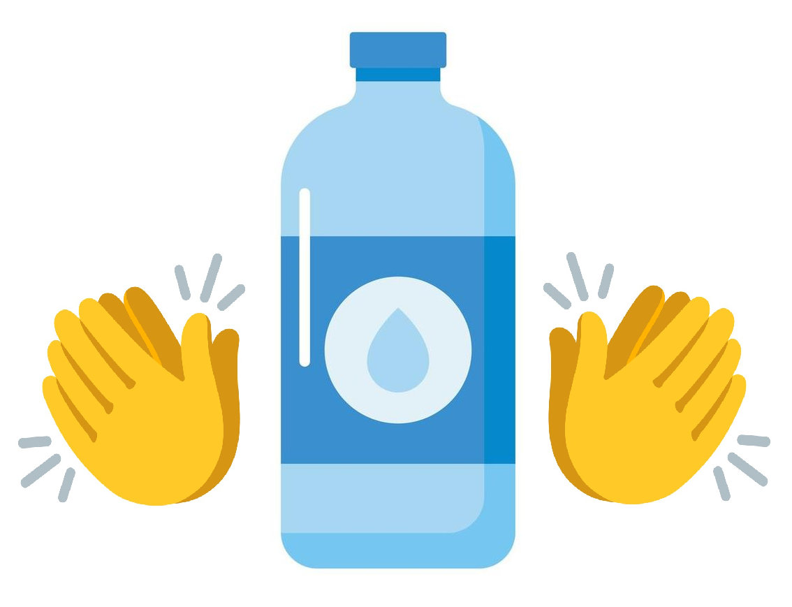

<ion-header [translucent]="true">
  <ion-toolbar>
    <ion-buttons slots="start">
      <ion-back-button defaultHref="/home"></ion-back-button>
      <ion-title>WaterBalance</ion-title>
    </ion-buttons>
  </ion-toolbar>
</ion-header>

<ion-content [fullscreen]="true">
  <ion-header collapse="condense">
    <ion-toolbar>
      <ion-title size="large">metaAlcanzada</ion-title>
    </ion-toolbar>
  </ion-header>
</ion-content>

<div class="container">
  <ion-card>
    
    <ion-card-header>
      <ion-card-title>¡ FELICIDADES !</ion-card-title>
      <ion-card-subtitle>Haz alcanzado tu meta diaria de consumo de agua !</ion-card-subtitle>
      <ion-card-content>
        <ion-item>
          <p class="centrado">Tu consumo de agua es de: {{ AguaRecibida }} ml</p>
        </ion-item>
      </ion-card-content>
    </ion-card-header>
  </ion-card>
</div>

<ion-footer>
  <ion-toolbar>
    <ion-title>App desarrollada por: Sebastián Corvalan</ion-title>
  </ion-toolbar>
</ion-footer>
